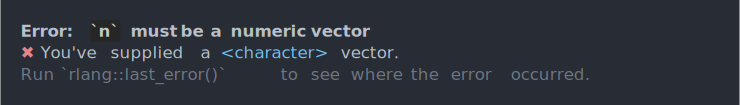

| cli_abort {cli} | R Documentation |
These functions let you create error, warning or diagnostic messages with cli formatting, including inline styling, pluralization and glue substitutions.
cli_abort(message, ..., .envir = parent.frame()) cli_warn(message, ..., .envir = parent.frame()) cli_inform(message, ..., .envir = parent.frame())
message |
It is formatted via a call to |
... |
Passed to |
.envir |
Environment to evaluate the glue expressions in. |
n <- "boo"
cli_abort(c(
"{.var n} must be a numeric vector",
"x" = "You've supplied a {.cls {class(n)}} vector."
))

len <- 26
idx <- 100
cli_abort(c(
"Must index an existing element:",
"i" = "There {?is/are} {len} element{?s}.",
"x" = "You've tried to subset element {idx}."
))